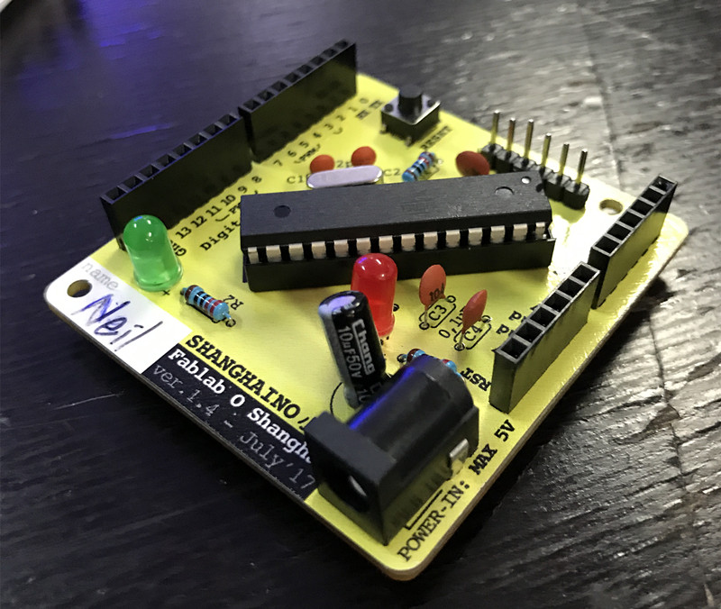

We learn about a PCB board by the basic rules for a circuit and some components
To make everything clear, we start with SHANGHAINIO
First, we write a list for all the components and stick them to the paper.
Turn the iron to 400°C we started soldering the components to the board
Soldering is a magic process. Keeping the iron touching the tip of components and copper, then attach the solder to the iron or heated tips copper, seeing the solder melt and having some connection with the board, which means we made it.

The front side seems good, however since we're not good at soldering, we med a lot problem and made a mess to fix them, so the back side is not that clean.
I made many brigdes across the tips, so I need to wipe the extra solder besides or remove it by a sucker. And I damage the copper cover during soldering,so we made the tips a bridge to reach to same effect.
Going through difficulties all of us still managed to made SHANGHAINIO work, and we upload an example blink to the ATMEGA.
Previous